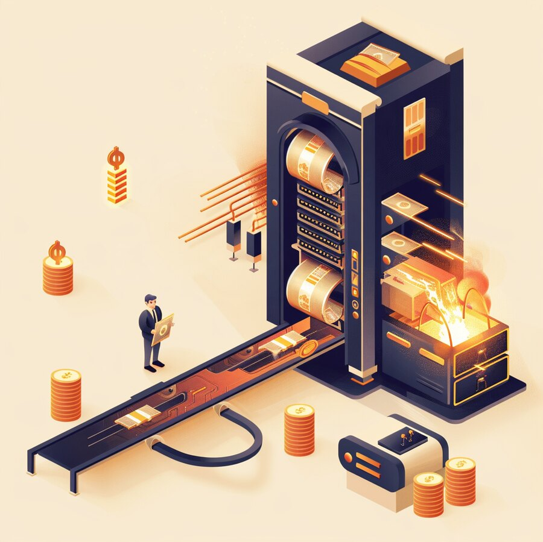

AI & Intelligence · Data · Applications · Cloud · Infrastructure · Network · Identity · Cybersecurity
Eight layers of your architecture, one briefing. Every item moves a number on your risk register, changes what you owe under compliance, or changes what your stack costs to run.
BUZZWORD OF THE WEEKInference paradox— when every token gets cheaper and your AI bill still doubles, because your agents just learned to think out loud for thirty times as long.
PASSWORD OF THE WEEKclass-c-no-vote— how to raise billions for AI without letting anyone tell you how to spend it.
HPE pulls wired, wireless & security into one self-driving net
IDENTITY & ACCESS
Eight certificate-authority keys were trivially weak
CYBERSECURITY
A critical PHP flaw threatens most of the web
FRONT PAGE · THE CEO’S STRATEGY DESK
The AI build-out just turned a cash machine into a cash furnace.
$2.1B
THE PRICE OF THE BUILD-OUT
Meta’s Q3 free-cash-flow deficit — its first since the 2012 IPO, versus a $10.6B surplus a year earlier — as AI capex guidance climbs to $135–145B. Even a cash machine is now issuing stock to pay for the AI race.
Semafor / Reuters · Oct 2026

When the most reliable cash machine in technology starts running a deficit to keep paying for AI, the build-out has stopped being free money and started sending bills. That is the signal in Meta’s week: alongside earnings, the company said it will create a new class of nonvoting Class C stock in January to help fund acquisitions, talent and chips — and disclosed its first free-cash-flow deficit since its 2012 IPO, about $2.1 billion for the quarter, against a $10.6 billion surplus a year earlier. Capital spending guidance rose to $135–145 billion for the year. The nonvoting shares let Mark Zuckerberg raise capital for the AI race without diluting his control.
For any CEO or board, this is a capital-allocation story, not a Meta story. The biggest, best-funded companies in the world are now net issuers of shares — buybacks paused, cash flow squeezed — to pay for an AI build-out whose returns are still largely a promise. If it is costing them this much, the question for your own AI program sharpens: what is the true, ongoing cost (not the pilot price), who ultimately pays for it, and what are you giving up — cash, flexibility, or control — to fund it?
Our read. Fund AI the way you’d fund any large capital program: with a clear-eyed run-rate, a return you can point to, and a financing plan that doesn’t mortgage your optionality. Budget for the part that keeps costing money — inference and operations, not just the build (see AI) — and stage spending against milestones rather than hype. Watch how your vendors are funding their build-outs, too; a supplier burning cash to win the race is a supplier whose prices and priorities can change. The AI opportunity is real. So is the bill, and this week even Meta showed it.
The most profitable firms on earth are now issuing stock to pay for AI. If it costs them this much, what is the true run-rate of your AI program? (answer at the foot)
1 AI & INTELLIGENCE
AI ECONOMICS · AGENTS
THE ‘INFERENCE PARADOX’: CHEAPER TOKENS, BIGGER BILLS
The price per token keeps falling, yet the cost of running AI keeps climbing — because agents consume vastly more of them.
The debate crystallizing around this week’s earnings has a name: the inference paradox. Even as the price of a token (the unit of AI computation) keeps dropping, the cost of actually running AI is rising — because agentic systems consume far more tokens than a simple chatbot. Analysts peg agent workloads at 5–30x the token use of a basic exchange, and Gartner projects the inference cost per agentic workflow will climb more than fivefold through 2028, even warning that AI-assisted coding could cost more than a developer’s salary if spending isn’t tied to value. Meta’s cash-flow squeeze (front page) is the macro version of the same math.
Our read. Stop budgeting AI at its pilot price. The cost that matters is the run-rate — inference and operations, which grow with usage and with how much “thinking” your agents do — not the one-time cost of a proof of concept. Three controls keep it sane: tier your models (route simple steps to cheap models, reserve expensive reasoning for when it earns its keep), set token budgets and limits per workflow, and monitor cost-per-task as a first-class metric. Tie every agent you deploy to a value it produces. Cheap tokens are not the same as a cheap system.
The inference paradox: token prices fall while total AI cost rises. Agents use ~5–30x the tokens of a chatbot; Gartner sees inference cost per agentic workflow up >5x through 2028, and warns AI coding could exceed a developer’s salary. ~23% of tech leaders already spend $200–$500 per developer/month on coding-agent tokens.
VENDOR MAP
Anthropic, Microsoft (Azure AI Foundry), Google Cloud (Vertex) and AWS (Bedrock) let you tier and route across models to control inference cost. The leverage is a gateway plus cost-per-task monitoring — so cheaper tokens actually translate into a cheaper system, not just a busier one.
SIGNAL BRAIN TEASER
Every token gets cheaper, yet your AI bill doubles. What did your agents start doing that your chatbot never did? (answer at the foot)
2 DATA
DATA SOVEREIGNTY · GOVERNANCE
‘SOVEREIGN’ DATA GOES MAINSTREAM
In a single week, the biggest vendors turned control over where your data lives — and who may touch it — into a product you can buy.
Data sovereignty stopped being a European compliance footnote and became a mainstream product line this week. Microsoft unveiled an EU sovereignty arrangement in which a European partner approves any remote login by Microsoft engineers to EU customer production systems, backed by a tamper-evident access log and a 29-company partner roster (including Dell, Nvidia and Mistral). IBM introduced Sovereign Core, an end-to-end system for building sovereign-AI environments with verifiable control. Teradata added air-gapped sovereign deployment on Google Distributed Cloud, running analytics with no public-internet connection. A cited BARC study found 62% name data-and-AI in core processes as a key driver of sovereignty requirements.
Our read. “Sovereign” is about to be stamped on every data and cloud product, so make it mean something concrete for you. Pin down three things: where your data physically resides, who can access it (including your vendor’s own engineers, and from which country), and how that access is logged and provably controlled. Map which workloads actually carry residency or operational-sovereignty obligations — regulated data, government work, critical IP — and don’t over-buy sovereignty where you don’t need it. The winning move is boundaries you can verify, plus the portability to change your mind later.
A sovereignty wave in one week: Microsoft EU access-approval + tamper-evident logs (29 partners, incl. Dell, Nvidia); IBM Sovereign Core (end-to-end sovereign AI with verifiable control); Teradata air-gapped analytics on Google Distributed Cloud. BARC: 62% cite data/AI in core processes as a sovereignty driver.
VENDOR MAP
Microsoft, IBM, Dell, Google Cloud and Red Hat anchor sovereign-cloud and data-residency options. The test isn’t whose label says “sovereign” — it’s whether you can prove where your data lives, who can touch it, and from where, and still move it if you choose.
SIGNAL BRAIN TEASER
“Sovereign” is suddenly on every data product. Do you actually know who can touch your data, and from where? (answer at the foot)
3 APPLICATIONS
CONSUMER AI · MONETIZATION
OPENAI TURNS CHATGPT INTO AN AD PLATFORM
ChatGPT ads reached 89 countries this week — the assistant your employees and customers use is now an advertising business.
OpenAI expanded ChatGPT ads to 26 more countries on October 21, bringing the total to 89, and said more than 100,000 advertisers have run campaigns since ads launched about eight months ago (an ads business Reuters reported had reached a $1 billion annualized run rate by August). Ads appear only on the Free and Go tiers; Plus, Pro and Enterprise stay ad-free. The expansion is widely read as revenue-building ahead of a possible IPO — and it marks a clear shift: the general-purpose AI assistant is becoming an advertising-supported consumer platform, the way search and social did before it.
Our read. Two implications for leaders. First, on cost and control: if your people use the free tier for work, their queries now sit inside an ad-funded product — a reason to put staff on paid, ad-free, enterprise plans with clear data terms, not consumer logins. Second, on strategy: AI answers are becoming paid real estate, just as search results did. Start asking how your brand shows up (or doesn’t) when an assistant answers a question about your category, and treat “AI answer optimization” as the next front in how customers find you. Free AI has a business model, and it isn’t charity.
OpenAI expanded ChatGPT ads to 26 more countries (Oct 21), now 89 total; 100,000+ advertisers have run campaigns in ~8 months; ads business hit a ~$1B annualized run rate (Aug, per Reuters). Ads show on Free and Go only; Plus/Pro/Enterprise stay ad-free. Read as a revenue push ahead of a possible IPO.
VENDOR MAP
Microsoft (Copilot), Google (Gemini) and Anthropic (Claude) offer paid, ad-free enterprise tiers with clearer data terms. The move: put staff on managed enterprise plans rather than consumer logins, and start planning for how your brand appears when an AI assistant answers for your category.
SIGNAL BRAIN TEASER
Your AI assistant is free. Who is paying for the answer it just gave you? (answer at the foot)
4 CLOUD
AI COMPUTE SUPPLY · CAPACITY
NVIDIA MOVES TO LOCK UP THE COMPUTE SUPPLY
At GTC Berlin, Nvidia funded a chain of capacity deals — a reminder that your cloud’s AI limits are now power, packaging and financing, not just GPUs.
At GTC Berlin on October 21, Nvidia announced a set of supply-chain capacity deals to feed the AI build-out: a $1.1 billion capacity-reservation advance to testing firm KYEC for new U.S. facilities (with total testing capacity expected to double from 2026 to 2027), substrate agreements with IBIDEN, Samsung Electro-Mechanics and Unimicron targeting a 2.5x capacity increase over three years, a greater-than-300% rise in advanced-packaging interposer capacity at Amkor, and a 15x jump in optical-engine output at SPIL. The backdrop, per analysts: hyperscalers are now constrained less by chip designs than by power, packaging and financing.
Our read. The useful signal for a cloud buyer isn’t the specific deals — it’s what they reveal about where the bottleneck has moved. AI capacity is increasingly gated by the unglamorous middle of the supply chain (substrates, advanced packaging, testing) and by power and money, all of which take years to expand (these deals mostly add capacity in 2027–2028). For your own planning, that means treating AI compute as a scarce, lead-time-bound resource: lock in committed capacity for critical workloads, keep a second cloud or region as a hedge, and ask providers hard questions about power availability and delivery dates — not just chip roadmaps.
Nvidia (GTC Berlin, Oct 21) capacity deals: $1.1B advance to KYEC for U.S. testing (testing capacity ~2x 2026→2027); 2.5x substrate capacity over 3 yrs (IBIDEN, Samsung Electro-Mechanics, Unimicron); >300% interposer capacity at Amkor; 15x optical-engine output at SPIL. Most new capacity lands 2027–2028.
VENDOR MAP
AWS, Microsoft, Google Cloud and Dell/HPE for on-prem all draw from the same constrained supply. Judge AI capacity on power, packaging and delivery dates, not chip specs; lock committed capacity for critical workloads and keep a second region or cloud as a hedge against the squeeze.
SIGNAL BRAIN TEASER
The chips exist, but so do power and financing limits. What is the real bottleneck on your cloud’s AI capacity? (answer at the foot)
5 INFRASTRUCTURE & HYBRID CLOUD
MEMORY · DATA-CENTER HARDWARE
THE MEMORY WALL OF THE AI DATA CENTER
Micron and Meta are pushing low-power memory into the data center — a sign that feeding the GPUs, not buying them, is the next constraint.
Micron and Meta jointly made the case this week for bringing LPDDR6 — low-power memory first designed for phones — into the AI data center. In a technical briefing and co-authored paper, Micron argued that sustained bandwidth per watt matters more than peak speed for AI, targeted a greater-than-35% power-efficiency improvement over the previous LPDDR5 generation, and pointed to module capacities of 512 GB and beyond (with a 1 TB server module described as technically feasible). The subtext: as GPUs multiply, memory capacity, bandwidth and power are becoming the binding constraint on AI infrastructure — and a major line item in its energy bill.
Our read. The headlines fixate on GPUs, but the quieter bottleneck is feeding them: memory and the power it draws increasingly determine what an AI data center can actually do, and what it costs to run. For leaders making infrastructure or colocation decisions, that reframes the questions — ask about memory bandwidth and power efficiency, not just chip counts, and treat power and cooling as first-order constraints on capacity and cost. If you’re buying AI compute as a service, the providers who win on performance per watt will be the ones who can offer capacity at a sane price as energy costs climb.
Micron + Meta push LPDDR6 into the AI data center: target >35% power-efficiency gain over LPDDR5, module capacities of 512 GB+ (1 TB server module called feasible), optimizing sustained bandwidth per watt over peak speed. Signal: memory and power, not GPU count, are the emerging constraint on AI infrastructure.
VENDOR MAP
Dell, HPE, Lenovo and IBM build the AI systems where memory and power now decide real throughput. The useful questions for infrastructure and colo decisions: memory bandwidth, performance per watt, and power/cooling headroom — not just how many accelerators fit in the rack.
SIGNAL BRAIN TEASER
You bought the GPUs. Can you feed them? The AI data center’s next wall isn’t compute — it’s what? (answer at the foot)
6 NETWORK & CONNECTIVITY
AUTONOMOUS NETWORKING · SASE
HPE PULLS WIRED, WIRELESS AND SECURITY INTO ONE SELF-DRIVING NETWORK
HPE unified its SASE, wireless and wired platforms under a single agentic framework — a bet that the enterprise network can increasingly run, and defend, itself.
HPE moved to unify HPE Networking EdgeConnect (its SASE/SD-WAN platform) with HPE Mist and HPE Aruba Central under a single, agentic “self-driving” framework — bringing wired access, wireless LAN and cloud-delivered security into one AI-native console with end-to-end visibility from edge to cloud. Building on its Marvis AI assistant, the pitch is autonomous network operations: the system detects, diagnoses and increasingly remediates issues (down to wired-port problems) on its own, and one trade outlet framed it as HPE beating Cisco to a “proper” self-driving network. It is also the clearest sign yet of how HPE is merging the Aruba and newly acquired Juniper/Mist portfolios into one stack.
Our read. Enterprise networking is consolidating into AI-run, converged platforms — wired, wireless and security under one brain — which can genuinely cut operational toil and mean-time-to-repair, but also concentrates more of your network on a single vendor’s automation. Two cautions. If you run a mix of Aruba and Juniper/Mist gear, pin down investment protection and the real integration path before you lean in (analysts flag this as the open question). And keep humans in the loop for high-impact automated changes: treat “self-driving” as driver-assist, not autopilot — let it handle the toil, but govern what it is allowed to change on its own.
HPE unifies EdgeConnect (SASE/SD-WAN) with Mist and Aruba Central under one agentic, “self-driving” framework — wired + wireless + cloud security in a single AI-native console, edge to cloud. Builds on the Marvis AI assistant with autonomous detect / diagnose / remediate, and marks the clearest step yet in merging the Aruba + Juniper/Mist portfolios.
VENDOR MAP
HPE (Aruba/Juniper), Cisco and Fortinet anchor converged, AI-run networking, with Zscaler on SASE. The move for leaders: demand investment protection across mixed estates, keep humans approving high-impact automated changes, and treat “self-driving” as driver-assist — great for toil, governed for anything risky. (HPE is a CyberSainya partner.)
SIGNAL BRAIN TEASER
Your network now detects, diagnoses and fixes itself. How much should it be allowed to change without asking you? (answer at the foot)
7 IDENTITY & ACCESS
PKI · TRUST
EIGHT CERTIFICATE-AUTHORITY KEYS WERE TRIVIALLY WEAK
A trusted certificate authority generated private keys so weak a researcher recovered them in under a second — one was simply the number 4.
Researchers found that eight intermediate certificate-authority keys from CA eMudhra were generated with so little randomness that all eight private keys were recovered from their public certificates in under a second — one key was literally the number 4, where a secure key should be an unguessable 384-bit number. eMudhra traced it to a flawed key-wrapping step in an April 2025 key-generation ceremony that produced and then published a weak key set. Because those certificates underpin web trust, Chrome, Firefox, Apple and Microsoft revoked the affected intermediates, and Google will remove the parent root from Chrome’s trust store starting October 27. No confirmed malicious use was reported, but anyone holding those keys could have forged trusted certificates for “any site.”
Our read. This is a failure in the foundation of digital trust — the certificate system that quietly authenticates nearly everything — and it lands on you in two ways. First, availability: once browsers pull trust, sites and services relying on those certificates can simply stop working, so inventory your certificates and know which CA issued each one, with a tested plan to re-issue fast. Second, assurance: treat your certificate authorities and PKI as critical suppliers, favor CAs with strong, audited key-generation practices, and build the agility to rotate or replace a CA quickly. The internet’s trust runs on randomness; when it’s weak, everything above it is too.
eMudhra: 8 intermediate CA private keys recovered from public certs in <1 second (one key = 4; a 384-bit random number was expected). Cause: a flawed key-wrap step in an Apr 2025 ceremony published a weak key set. Chrome, Firefox, Apple, Microsoft revoked the intermediates; Google removes the parent root from Oct 27. No confirmed abuse — but forged certs were possible.
VENDOR MAP
Okta, Microsoft (Entra), Cisco (Duo) and cert-lifecycle tooling help inventory and rotate certificates fast. The move: treat CAs/PKI as critical suppliers, keep a live certificate inventory mapped to issuer, favor audited key-generation, and build the agility to re-issue or swap a CA quickly. (Okta is a CyberSainya partner.)
SIGNAL BRAIN TEASER
A private key meant to be an unguessable 384-bit number turned out to be “4.” How long would that take to crack? (answer at the foot)
8 CYBERSECURITY
CRITICAL RCE · PATCH NOW
A CRITICAL PHP FLAW THREATENS MOST OF THE WEB
Two critical PHP flaws — details leaked before the fix — let attackers run code on servers across roughly 70% of the internet.
Two critical remote-code-execution flaws in PHP — dubbed PHP2Shell, CVE-2026-109618 and CVE-2026-109619, each rated 9.2 on the CVSS v4 scale — can let unauthenticated attackers run code on vulnerable web servers. Because PHP runs an estimated ~70% of websites, the exposure is enormous. The details and a proof-of-concept leaked on October 20, before the planned embargo, pushing the PHP Foundation to release emergency patches (8.5.12, 8.4.27, 8.3.36, 8.2.35) on October 21; Amazon reported proof-of-concept exploit attempts the same day, and the U.S. NSA advised organizations to update immediately or take affected systems offline. Bitsight found only about a third of PHP instances run a branch that even received the fix.
Our read. This is the classic break-glass scenario: a critical flaw in ubiquitous software, with a public exploit out before many could patch. Move now. Inventory everything running PHP — including appliances, plugins and third-party apps that bundle it — and patch to the fixed versions immediately; updating your own application code does not fix it. For anything you can’t patch at once, put compensating controls in front (a WAF rule, restricted exposure) or take it offline, exactly as the NSA advised. And mind the long tail: older PHP branches (notably 7.4) got no fix, so unsupported systems need to be isolated or replaced, not just scanned.
PHP2Shell — CVE-2026-109618 + CVE-2026-109619 (CVSS v4 9.2 each): unauthenticated RCE affecting PHP (runs ~70% of websites). Details/PoC leaked Oct 20; emergency patches Oct 21 (8.5.12 / 8.4.27 / 8.3.36 / 8.2.35); Amazon saw PoC attempts same day; NSA urged patch-or-offline. Only ~1/3 of instances run a fixed branch; 7.4 got no fix.
VENDOR MAP
CrowdStrike, Microsoft, Palo Alto Networks and Fortinet (WAF/virtual patching) plus Tenable for exposure help find and shield PHP fast. The playbook: inventory everything running PHP (incl. bundled/third-party), patch to fixed versions now, shield or isolate what you can’t, and retire unsupported 7.4 systems rather than scan around them.
SIGNAL BRAIN TEASER
One flaw sits in the software running most of the web, and the exploit leaked early. How fast is your patch window? (answer at the foot)
THE THROUGH-LINE
ACROSS ALL EIGHT LAYERS
This week sent every leader two bills for the AI build-out at once: a financial one and a control one. The financial bill came due on the front page — a cash machine, Meta, posted its first free-cash-flow deficit since its IPO and reached for nonvoting stock to keep paying — and echoed across the stack: AI’s running costs keep climbing even as tokens cheapen (AI), Nvidia moved to lock up a supply chain gated by power and packaging (Cloud), and memory became the data center’s next wall (Infrastructure). The control bill came due too: “sovereign” data and cloud offerings multiplied as companies drew verifiable borders around their data (Data), OpenAI turned its free assistant into an ad business (Applications), and the week’s two security failures — trivially weak certificate-authority keys and a critical PHP flaw in most of the web — showed what happens when the quiet foundations everyone trusts crack (Identity, Cybersecurity), even as networking consolidated into AI-run, self-driving platforms (Network). For leaders: budget AI at its true run-rate, put real and portable boundaries around your data, and keep shoring up the unglamorous foundations — because that is where trust, and cost, actually live.
SECURITY SPECIAL · PHP2SHELL — A BREAK-GLASS GUIDE
Two critical PHP flaws (CVE-2026-109618 & CVE-2026-109619, CVSS v4 9.2 each) let an unauthenticated attacker run code on vulnerable web servers. PHP powers an estimated ~70% of websites, the proof-of-concept leaked before the fix, and only about a third of PHP instances run a branch that even received a patch. This is a patch-tonight situation — here is what it is, what caused it, the week in order, and exactly what to do.
WHAT IT IS
“PHP2Shell” is the nickname for a pair of bugs that turn an ordinary web request into a remote shell — attacker-controlled code running on your server, with no login required. PHP is the programming language that runs behind most websites and web apps, so a flaw in PHP itself sits underneath whatever you built on top of it. It affects essentially every way PHP serves web traffic — PHP-FPM, Apache’s mod_php, php-cgi, FrankenPHP and LiteSpeed — which is why the blast radius is the whole web, not one app.
WHAT CAUSED IT
A memory-handling mistake, not a coding error in your site. Under the hood, PHP can hit an out-of-memory condition while it is still setting up the internal data for a request — so that request data is left half-initialized. When PHP later cleans up, it acts on that corrupted, partially-built state, and an attacker who can nudge the server toward that failure can steer the cleanup into running their own code. In short: a low-memory edge case corrupts request state, and corrupted state becomes code execution.
WHY IT’S BAD
Unauthenticated + ubiquitous + leaked early. No credentials are needed, the affected code runs on ~70% of sites, and the exploit went public before many could patch — Amazon saw proof-of-concept attempts within a day. Fixing your own application code does nothing; only updating PHP itself closes it, and a third of instances run branches that got a fix (the rest, including end-of-life 7.4, got none).
HOW THE WEEK UNFOLDED
OCT 20Technical details and a working proof-of-concept leak ahead of the planned embargo, forcing the PHP Foundation to move the release up.
OCT 21Emergency patches ship: PHP 8.5.12, 8.4.27, 8.3.36, 8.2.35. Amazon reports proof-of-concept exploit attempts the same day.
OCT 21The U.S. NSA advises organizations to update immediately — or take affected systems offline until they can.
NOWPublic exploit code is circulating; ~2/3 of PHP instances still run an unpatched or unsupported branch (7.4 got no fix).
YOUR BREAK-GLASS CHECKLIST
Inventory every PHP surface — web apps, and the appliances, plugins and third-party software that bundle PHP (that is where it hides).
Patch to the fixed versions now. Updating your own application code does not fix this — the flaw is in PHP itself.
Shield what you can’t patch yet — WAF/virtual-patch rules, restrict exposure, or take it offline, exactly as the NSA advised.
Isolate or retire the long tail — unsupported branches (notably 7.4) received no fix; don’t just scan around them.
Hunt, don’t assume — with a pre-patch exploit window, check internet-facing hosts for signs of compromise, not just patch status.
PATCH TO →8.5.128.4.278.3.368.2.35 · No fix: PHP 7.4 and other end-of-life branches — isolate or replace.
European-partner approval for any Microsoft-engineer login to EU production systems, with tamper-evident access logs (29 partners, incl. Dell). Why it matters: operational sovereignty you can verify — who touches your cloud, from where.
End-to-end system for building sovereign-AI environments with verifiable control over data, operations and access. Why it matters: a buyable template for regulated and government AI workloads that must stay provably in-boundary.
At its Partner Summit, Cisco pushed AI to modernize IT operations and network security, and said it will add Model Context Protocol (MCP) servers to its networking platforms. Why it matters: your core network vendor is wiring agents straight into network management — powerful, and one more place to govern agent access.
Apple’s first foldable iPhone reached stores Oct 23 (from $1,999; 5.4″ closed, 7.6″ open). Why it matters: a new mobile form factor your execs and customers will carry — and your apps will need to fit.
New Macs expected — an M6 refresh and, analysts believe, Apple’s first touchscreen MacBook. Why it matters: a touchscreen Mac would reshape the premium-laptop fleet decision your IT team makes next.
Los Angeles — new Macs; watch for Apple’s first touchscreen MacBook and the M6 refresh.
OCT 28–29
Big Tech Q3 earnings
Microsoft, Alphabet & Amazon report — the clearest read yet on AI capex and whether the spend is paying off.
NOV 9–12
KubeCon + CloudNativeCon NA
Salt Lake City, UT — cloud-native and platform engineering; where your infra teams belong.
NOV 17–20
Microsoft Ignite
San Francisco, CA — Microsoft’s enterprise AI, Copilot and security roadmap.
NOV 30–DEC 4
AWS re:Invent
Las Vegas, NV — the year’s biggest cloud launches; pricing and capacity signals.
You can own every security tool on the market and still be one click from a breach — because the weakest link has never been the technology. It’s people.
That’s what a real awareness program fixes. CyberSainya designs and delivers custom cyber-awareness workshops for leadership, teams and boards — in any sector, at any stage of your transformation — live or virtual, scoped to your people and the threats you actually face. When the week’s failures hide in certificates and server software, the judgment your people bring is still the deciding control.
Workshops for leadership, teams and boards — any sector, live or virtual. Reach us at cybersainya.com/contactus
Brain teaser answers — Run-rate: higher than your pilot — budget inference + ops. Tokens vs bill: agents reason for 5–30x more tokens. Free AI: advertisers — you’re the inventory. Capacity: power and financing, not just chips. Next wall: memory. Self-driving net: let it handle toil, gate the risky changes. Key “4”: under a second. PHP window: hours — patch now.
Subscribe to The Signal. The eight-layer executive briefing, free in your inbox every week. Forward it to a colleague who should be reading it.
CyberSainya is a digital transformation partner. We help organizations turn IT, security, and AI from sources of risk into engines of growth — complexity made simple. That means clear strategy, the right technology, and a partner who stays in the room long after the decision is made: advisory and consulting, security and IT assessments, executive workshops, and hands-on execution. Through our AI products division, CernoGlobus, we build practical, security-by-design AI that puts enterprise-grade protection behind everyday automation.
Advisory & assessments
Benchmark your control plane across all eight layers, then a clear plan to close the gaps — not a 90-page PDF nobody reads. Take the free assessment →
CernoGlobus · AI division
Security-by-design AI coworkers that automate the busywork without opening one more door.
Vendor-neutral by design. CyberSainya partners with Anthropic, Adobe, AWS, Check Point, Cisco, CrowdStrike, Databricks, Dell, Fortinet, Google Cloud, HPE, IBM, Lenovo, Lightspeed, Microsoft, Okta, Palo Alto Networks, Red Hat, Tenable, and Zscaler. So the tools we recommend fit your environment and your risk, never a quota.